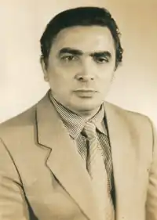

Микола Михайлович Яненко, народився 7 жовтня 1941 в смт. Попільня Житомирської області — український дитячий письменник, прозаїк.
Після закінчення місцевої десятирічки два роки був літературним працівником районної газети, потім служив в армії. Далі навчався в Одеському морехідному училищі рибної промисловості і, закінчивши його, почав працювати на риболовецьких траулерах у морях Північного Льодовитого та Тихого океанів. Деякий час працював кореспондентом газети "Правда тундри" на півострові Ямал. Скрізь зустрічався з цікавими людьми, помічав красу природи, дізнавався нове про безмежний навколишній світ Півночі і Далекого Сходу.
Враження від пережитого, побаченого, почутого проростали зернами творчості, просилися на папір. Став у пригоді і досвід роботи в газеті. Почав писати оповідання. Так і з'явились одна за одною у видавництві "Веселка" збірки оповідань Миколи Яненка для дітей різного віку: "Дім серед хвиль" (1976), "Подарунок гарпунера" (1977), "Дорога до північних оленів" (1979) та інші книги. Після далеких мандрівок повернувся у свою рідну Попільню. Закінчив інститут, освоївши спеціальність інженера-енергетика. Багато років працював диспетчером електричних мереж. У 2011 році відзначив своє 70-ліття. В 1996 році житомирське видавництво "Полісся" видає книгу М. Яненка "Цвітуть в океані квіти", куди крім оповідань входить повість "Один серед снігів". А в 1997 році в цьому ж видавництві побачила світ нова книга "Хай буде шторм". І саме за ці видання Микола Яненко отримав звання лауреата премії імені Лесі Українки (1998 р.) за творчість для дітей. У 2007 та 2008 роках видавництво "Богдан", що знаходиться в місті Тернополі, випустило три нових збірки оповідань Миколи Яненка "Розповіді про море", "Розповіді про Північ", "Хай буде шторм". Окремі оповідання Яненка друкувались в різних дитячих журналах ("Піонерія", "Барвінок"), антологіях. Твори Миколи Михайловича Яненка для дітей можна поділити на кілька тематичних напрямків: Цикл оповідань про бувалого, кмітливого і людяного боцмана Бородая ("Вимушена посадка", "В шторм", "На краю землі", "Ідемо за тралом"). Про мужнього майстра на всі руки, мисливця Петра Мірошникова (повість "Один серед снігів"). Про незвичайні пригоди з морськими тваринами ("Дім серед хвиль", "Спасибі вам, дельфіни", "Мандрівник з країни Китанії", "Втеча"). Про дітей Півночі — маленьких трудівників, дослідників, великих друзів природи ("На крижині Ука", "Дорога до північних оленів", "Діти з океанського берега"). Миколі Яненку визнання принесли книги для дітей. Проте вважати його тільки дитячим письменником було б неправильно. Своє мудре слово він промовляє і до дорослих читачів. Його публікації на морально-етичні теми постійно з'являються на сторінках центральної преси, зокрема в українській газеті "Сільські вісті".[